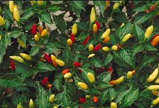

Info Tanaman Banyumanik

Cabai
Kingdom: Plantae
Divisi: Tracheophyta
Class: Magnoliopsida
Ordo: Solanales
Famili: Solanaceae
Genus: Capsicum
Spesies: Capsicum frutescens
🌱 Budidaya
- Lingkungan: Cocok di dataran rendah hingga 1.200 mdpl dengan tanah subur, gembur, dan pH antara 6–7. Butuh sinar matahari penuh dan drainase yang baik.
- Penanaman: Jarak tanam sekitar 50 x 60 cm. Waktu tanam ideal saat musim kemarau dengan pengairan yang cukup.
- Perawatan: Siram secara rutin, terutama saat musim kering. Pemupukan dilakukan setiap 2 minggu dengan kompos dan NPK. Pangkas tunas liar dan lakukan pengendalian hama seperti kutu daun dan ulat buah.
💡 Fun Fact
"Semakin Kecil, Semakin Pedas!" — Cabai rawit umumnya memiliki rasa lebih pedas daripada cabai besar karena kandungan capsaicin yang lebih tinggi.
🍃 Manfaat
- Mengandung capsaicin yang membantu meningkatkan metabolisme, mengontrol gula darah, dan mendukung kesehatan jantung.
- Merupakan bahan penting dalam berbagai masakan khas Nusantara.
- Memiliki nilai ekonomi tinggi sebagai komoditas pertanian.